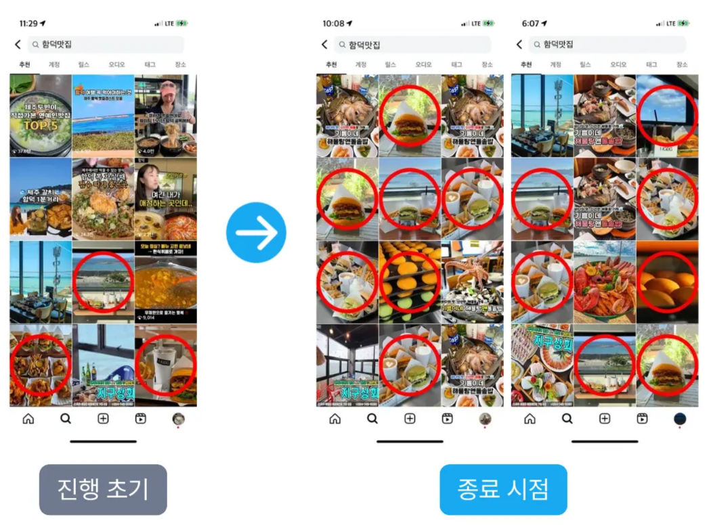
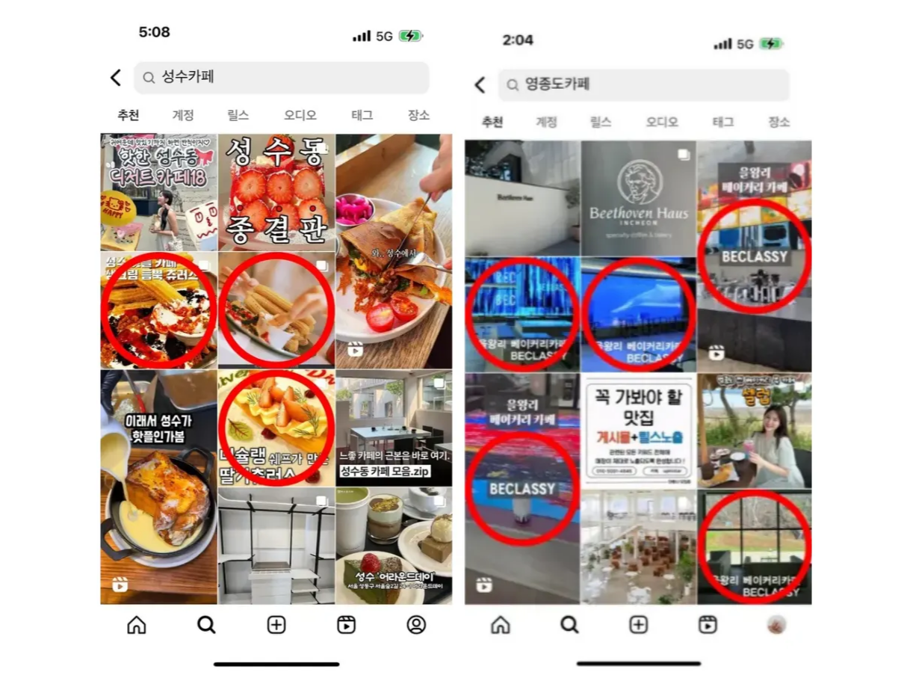
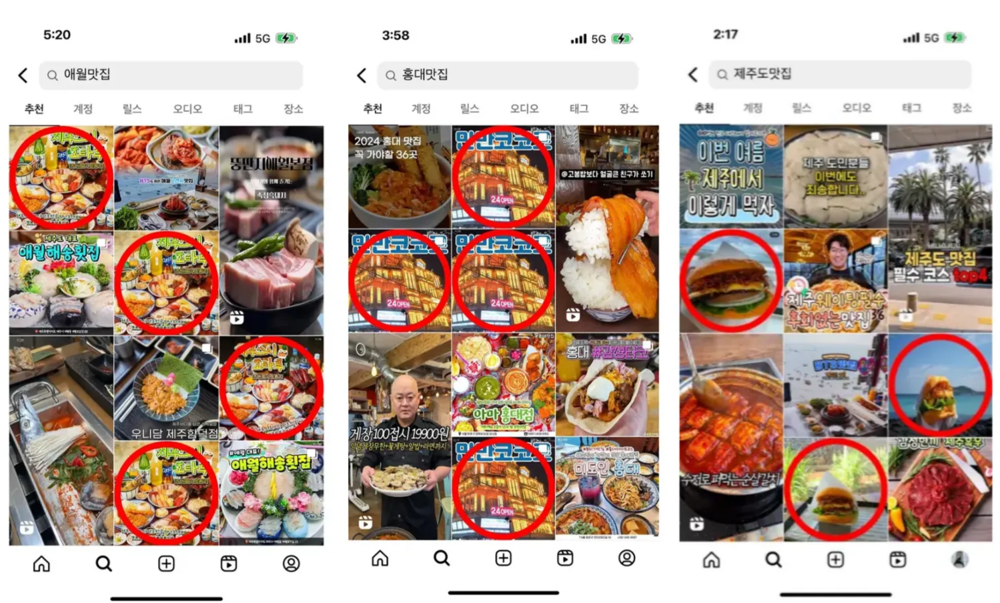
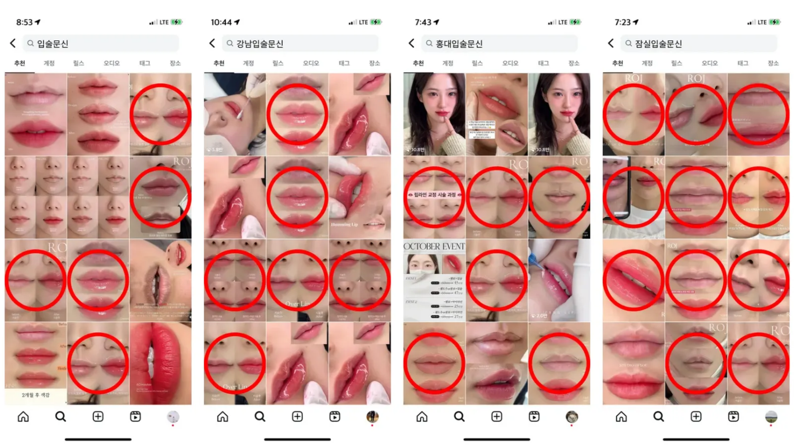

'내 게시물 상위 노출' 작업은 인스타그램 내 특정 키워드 검색 시, 광고주님 계정에 업로드된 게시물이 추천탭(인기 게시물) 상위 영역에 노출될 수 있도록 유도하는 프리미엄 서비스입니다.
| 구분 | 일반 게시물 | 상위 노출 (Golden Zone) |
|---|---|---|
| 위치 | 스크롤을 한참 내려야 발견됨 | 검색 즉시 최상단 노출 |
| 도달 | 기존 팔로워에게만 제한적 노출 | 관심사 기반 잠재 고객에게 도달 |
| 결과 | 낮은 유입, 저조한 문의 | 폭발적인 유입, 높은 전환율 |
▼ 아래 토글을 클릭하여 원리를 확인해보세요.
인스타그램은 사용자의 팔로우·좋아요·저장 등 행동 데이터를 기반으로 각 사용자에게 맞춤 검색 결과를 제공합니다. 같은 키워드를 검색해도 사람마다 다른 게시물이 노출되는 이유가 바로 이 관심사 타겟팅 때문입니다.
인스타그램 알고리즘은 게시물의 최신성(Recency)을 중요한 랭킹 요소로 반영합니다. 꾸준한 배포를 통해 최신성 점수를 유지하는 것이 지속적인 상위 노출의 핵심 전략입니다.
인스타그램은 검색 결과에서 다양한 게시물을 순환 노출시켜 사용자 반응을 측정합니다. 추천탭 진입을 위해서는 이 로테이션 풀에 들어갈 수 있는 콘텐츠 신호를 확보하는 것이 중요합니다.
정밀 타겟팅 / 높은 주목도 / 신뢰도 상승 / 장기적 성장
▼ 아래 토글을 클릭하여 실제 사례를 확인해보세요.
맛집 및 카페 업종의 실제 추천탭 노출 사례입니다. 지역 키워드와 업종 키워드를 조합하여 추천탭 상위에 안정적으로 노출된 결과를 확인할 수 있습니다.



뷰티 업종의 실제 추천탭 노출 사례입니다. 시술명·지역명 키워드 조합으로 구매 의향이 높은 잠재 고객에게 효과적으로 노출된 결과를 확인할 수 있습니다.

사진 / 릴스 모두 작업 가능합니다.
| 구분 | 가격 (VAT 별도) | 특징 및 제공 내역 |
|---|---|---|
| ⚡️단건 작업 | 12,000원 | • 게시물 1회 상위 노출 작업 진행 |
| 월간 관리 | 120,000원 | • 주 3회 업로드 기준 (총 월 12회 제공) • 단건 대비 회당 2,000원 할인 ↓ |
[중요] 계정 진단 및 노출 적합 상태(최적화 여부) 확인
서비스 비용 결제 진행
진행 방식 선택: 링크 전달 혹은 업로드 시 자동 진행 중 선택
작업 종료: 세팅된 조건에 따라 작업이 진행되며 완료 시 자동 종료됩니다.
성과 확인: 인위적인 수치 리포트 대신, 인스타그램 공식 [인사이트]를 통해
유입 경로와 도달률의 실질적인 변화를 직접 확인하실 수 있습니다. (별도 리포트 미제공)
서비스 이용 전 아래 내용을 반드시 확인해주세요.
인스타그램 알고리즘의 특성상 100% 노출을 보장하기는 어렵습니다. 다만, 최적화된 작업 방식을 통해 상위 노출 가능성을 최대한 높여드립니다.
인위적인 수치 리포트 대신, 인스타그램 공식 인사이트를 통해 실질적인 변화를 직접 확인하실 수 있습니다. 이는 데이터의 투명성과 신뢰성을 위한 방침입니다.
작업은 가능하나, 계정 최적화 상태에 따라 효과 차이가 클 수 있습니다. 상담을 통해 계정 상태를 먼저 진단해 드립니다.
인스타그램 AI가 콘텐츠의 주제를 명확히 학습할 수 있도록 작성하는 것이 핵심입니다.
어떤 콘텐츠인지 텍스트로 구체적으로 작성하여 인스타그램 AI가 게시물의 주제를 명확히 파악할 수 있도록 합니다.
더 다양한 사용자에게 도달할 수 있도록 대·중·소 키워드를 균형 있게 배치한 해시태그 전략을 활용합니다.
서비스 문의 및 상담은 아래 카카오 채널을 이용해주세요.
카카오 채널 상담하기